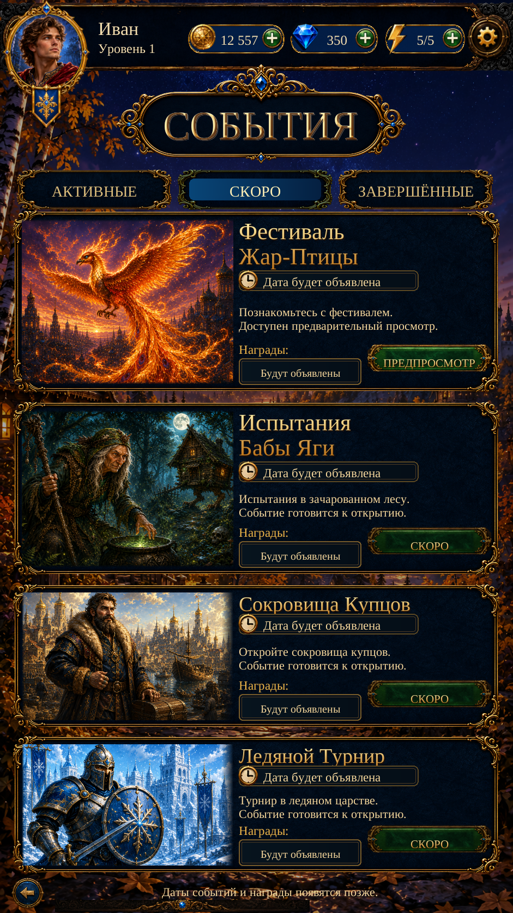

Events — Reference Layout R2
Actual Unity captures. Taller first two cards, larger live gold heading, reference clock, framed date-pending status and reward hierarchy. All 17 targeted checks passed. This is a closer layout match, not an exact reproduction.

R2 Russian — 941×1672 · actual Unity captureEvent dates and rewards remain unannounced. Only the first event opens its existing preview; participation is unavailable. The final card is slightly shorter to retain Back. Character poses, scenery, tab shapes, engraving and exact font identity remain different.